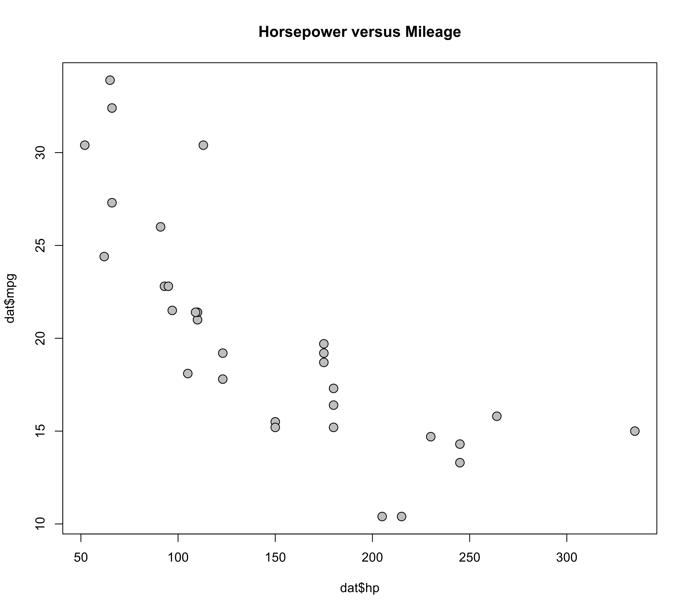

annotate.RdFunction to add annotations to a plot.
a vector of colors (can be up to length 9).
a numeric vector to specify the line width for freehand drawing, for symbols, and the eraser.
a numeric vector to specify the size of points and text.
a logical to specify whether visual information about the drawing mode and colors should be shown while annotating a plot. Can also be a numeric value to specify a multiplication factor for the visual information.
This is the main function of the package. After creating a plot, for example with plot(), the command annotate() enters a freehand drawing mode where one can draw on the plot (by pressing the left mouse button and dragging the pointer across the plot). Use the q key (or the right mouse button) to quit the annotate() function.
Various keyboard keys can be used to select colors and to change the drawing mode (when info=TRUE, one can also click on the boxes at the top to select modes/colors):
| key | function | |
1-9 | Select one of the colors from the ones specified via the col argument. | |
d | Change to freehand drawing mode as explained above. | |
p | Change to point drawing mode. Click on a location of the plot to add a point. | |
l | Change to line drawing mode. Click on a location, hold the mouse button, move the pointer to a different location, and release the mouse button to draw a line. | |
a | Change to arrow drawing mode. Works like the line drawing mode. The arrowhead is shown at the release location. | |
A | Change to arrow drawing mode with arrowheads at both ends. | |
r | Change to rectangle drawing mode. Works like the line drawing mode. | |
c | Change to circle drawing mode. Works like the line drawing mode. The larger of the x- or y-axis distance determines the radius of the circle. | |
C | Change to circle drawing mode. Works like the freehand drawing mode, except that the nearest circle corresponding to the input coordinates is drawn. Note that the circle is drawn after releasing the mouse button. | |
o | Change to ellipse drawing mode. Works like the freehand drawing mode, except that the nearest ellipse corresponding to the input coordinates is drawn. Note that the ellipse is drawn after releasing the mouse button. | |
t | Change to text drawing mode. Click on a location (which enters type mode), type some text, and after hitting enter the text is added to the right of the click location. Note that the text typed is not shown until hitting enter. The escape key cancels the text entry. | |
e | Change to eraser mode. Like the freehand drawing mode, except that the background color is used for drawing. |
Various keyboard keys can be used to adjust the settings:
| key | function | |
| ↓↑ | Decrease/increase the line width or point/text size. The default sizes are set by the lwd and cex arguments. Can also use the - and + (or =) keys for the same purpose. | |
| ←→ | Toggle through four different point symbols (filled circle/square/diamond, open circle) in point drawing mode or three different line types (solid, dashed, dotted) when drawing lines, arrows, rectangles, circles, or ellipses. | |
s | For freehand drawing, toggle smooth mode, so that the line is drawn after running a smoother over the input coordinates. For lines and arrows, toggle snap mode, so that lines/arrows are drawn exactly horizontally/vertically. Selecting the same mode twice or using the middle mouse button also toggles these modes. |
Finally, some additional keyboard keys have the following functions:
| key | function | |
u | Undo (i.e., remove) annotations that have been added to the plot by drawing on top of them with the background color of the plot. Therefore, any elements underneath an annotation that is removed in this manner will also be drawn over. | |
z | Redraw the entire plot without the annotations. This relies on recordPlot and replayPlot working correctly. | |
x | Fix the current state of the plot (i.e., runs recordPlot) so z redraws the plot in this state. | |
b | Make the plot completely blank. See also the blank function for creating a blank plot. | |
i | Toggle info on/off. |
When info=TRUE (the default), then visual information about the drawing mode and colors are shown at the top left while annotating a plot. This information may overlap with the plot title or other elements. One can use the info argument to specify a numeric value to rescale the visual information to better match the resolution of the plot. Note that the boxes for the drawing modes and colors are clickable.
Resizing plots while or after the annotate function has been run is not recommended (all annotations and visual elements need to be redrawn, which can take some time, especially when a lot of annotations have been added to the plot).
After annotating a plot, it should be possible to save the plot including the annotations with dev.print, for example using something like dev.print(device=png, filename="plot.png", width=<width>, height=<height>). However, by default, the plot will have a transparent background color, which is typically not what is desired. To avoid this issue, use par(bg="white") before creating the plot to set a white background color.
No return value (called for side effects).
dat <- mtcars
plot(dat$hp, dat$mpg, pch=21, bg="gray", cex=1.5, main="Horsepower versus Mileage")

annotate()
#> Function can only be used in interactive mode.